This is a Long Term Support Apps.Update: v14.24.03.11
- 1. Deletes Odoo label in footer
- 2. Replaces "Odoo" in Windows title
- 3. Customize Documentation, Support, About links and title in usermenu
- 4. Adds "Developer mode" link to the top right-hand User Menu.
- 5. Adds Quick Language Switcher to the top right-hand User Menu.
- 6. Adds Country flags to the top right-hand User Menu.
- 7. Adds English and Chinese user documentation access to the top right-hand User Menu.
- 8. Adds developer documentation access to the top right-hand User Menu.
- 9. Customize "My odoo.com account" button
- 10. Standalone setting panel, easy to setup.
- 11. Provide 236 country flags.
- 12. Multi-language Support.
- 13. Change Powered by Odoo in login screen.(Please change '../views/app_odoo_customize_view.xml' #15)
- 14. Quick delete test data in Apps: Sales/POS/Purchase/MRP/Inventory/Accounting/Project/Base Models.
- 15. Reset All the Sequence to beginning of 1: SO/PO/MO/Invoice...
- 16. Fix odoo reload module translation bug while enable english language
- 17. Stop Odoo Auto Subscribe(Performance Improve)
- 18. Show/Hide Author and Website in Apps Dashboard (odoo 11 only)
- 19. One Click to clear all data (Sometime pls click twice)
- 20. Show quick upgrade in app dashboard, click to show module info not go to odoo.com
- 21. Can clear and reset account chart. Be cautious.
- 22. Update online manual and developer document to odoo12.
- 23. Add reset or clear website blog data
- 24. Customize Odoo Native Module(eg. Enterprise) Url
- 25. Add remove expense data
- 26. Add multi uninstall modules
- 27. Add odoo boost modules link.
- 28. Easy Menu manager.
- 29. Apps version compare. Add Install version in App list. Add Local updatable filter in app list.
- 30. 1 key export app translate file like .po file.
- 32. Fix odoo bug of complete name bug of product category and stock location..
- 33. Add Demo Ribbon Setting.
- 34. Add Remove all quality data.
- 35. Fixed for odoo 14.
- 36. Add refresh translate for multi module.
- 37. Easy noupdate manage for External Identifiers(xml_id).
- 38. Add Draggable Dialog enable.
- 39. Only erp manager can see debug menu.
- 40. Fix support for enterprise version.
- 41. Fix odoo bug, when click Preferences menu not hide in mobile.
- 42. Add menu navbar setup for top or bottom. navigator footer support.
- 43. Check to only Debug / Debug Assets for Odoo Admin. Deny debug from url for other user.
- 44. Check to stop subscribe and follow. This to make odoo speed up.
- 45. Add addons path info to module.
- 46. Add Help documentation anywhere. easy get help for any odoo operation or action.
If you want to change the login page.
Please modify the file \views\app_odoo_customize_views.xml
This module can help to white label the Odoo.
Also helpful for training and support for your odoo end-user.
The user can get the help document just by one click.
Help Document Anywhere
Get Help Documentation on current odoo operation or topic.
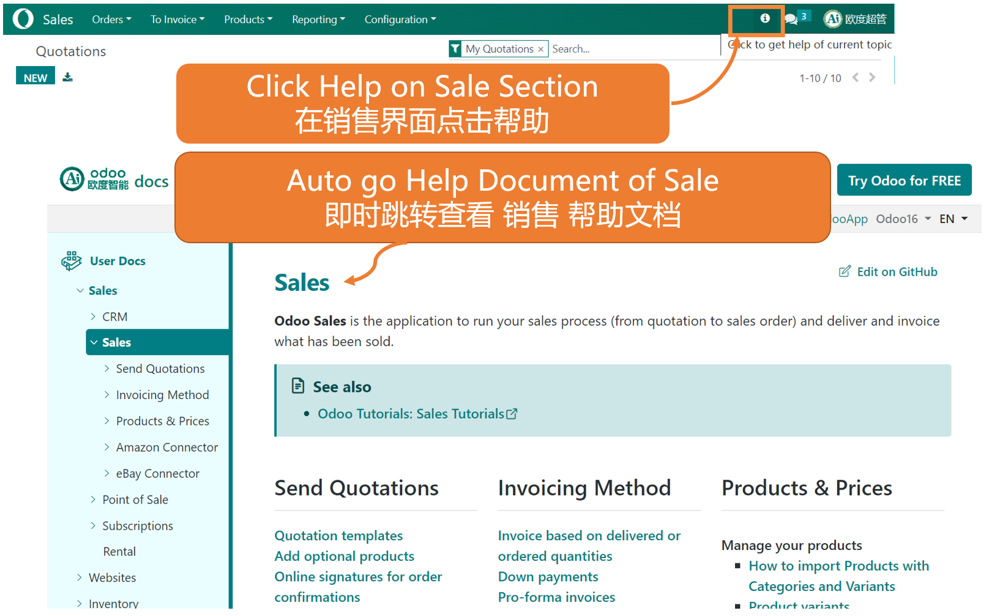
You can use you company logo for the document with you help document
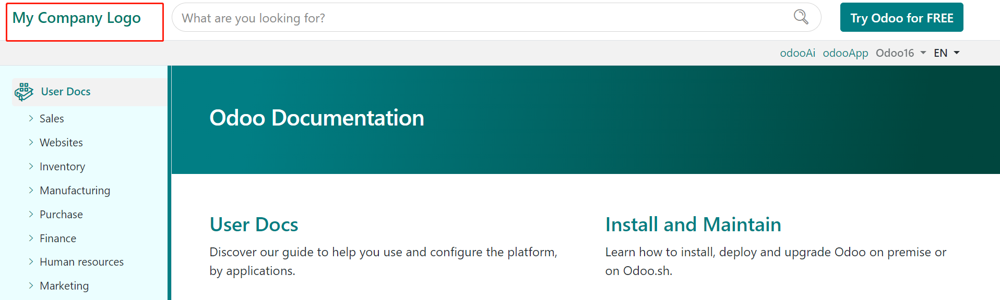
You can set extra help doc for any addons
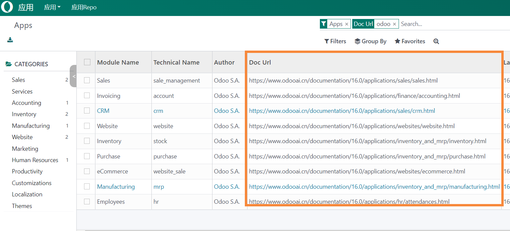
Must in development mode
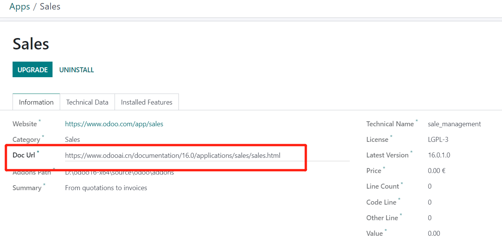
New Ai Center Support
You can install Ai service like chatgpt and google bard and azure openai.
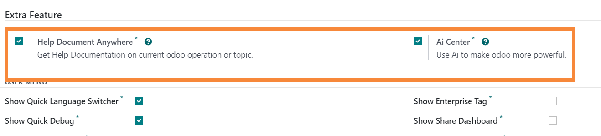
Odoo Customize(Debranding Title,Language,Documentation,Quick Debug)
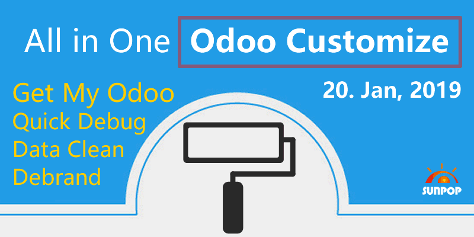
Multi-language support: Chinese ready
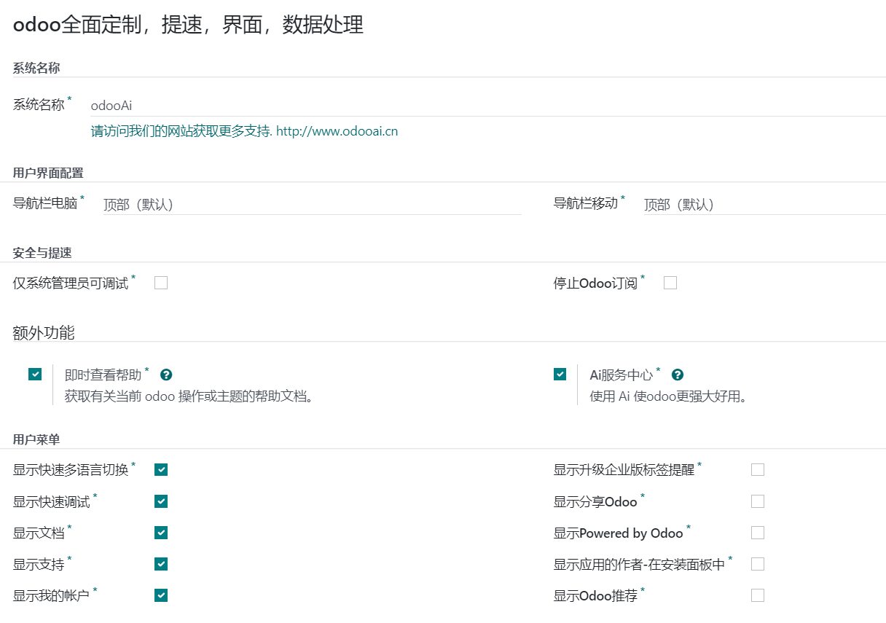
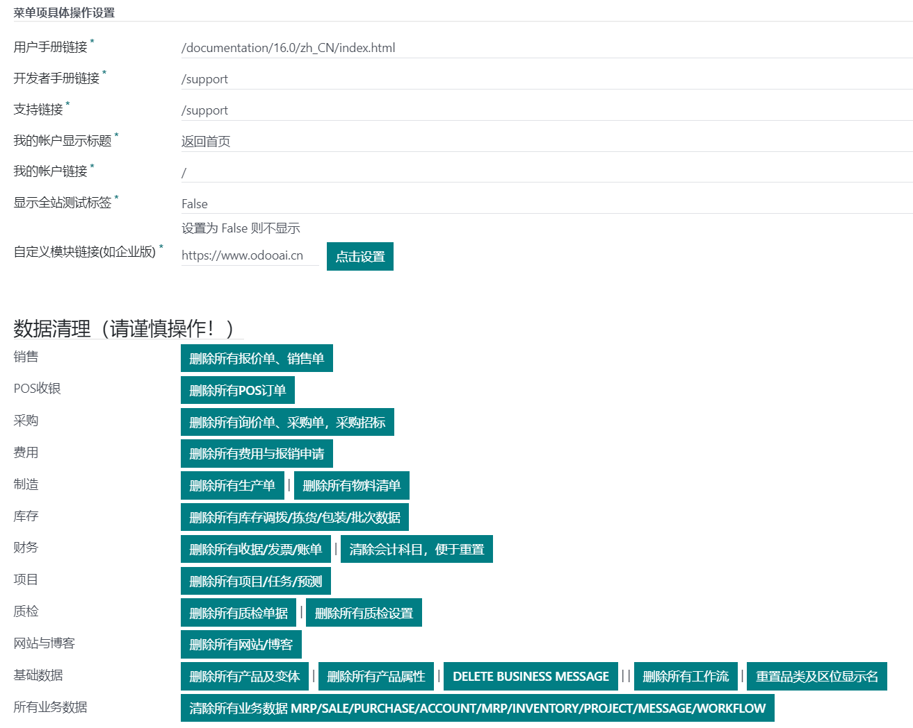
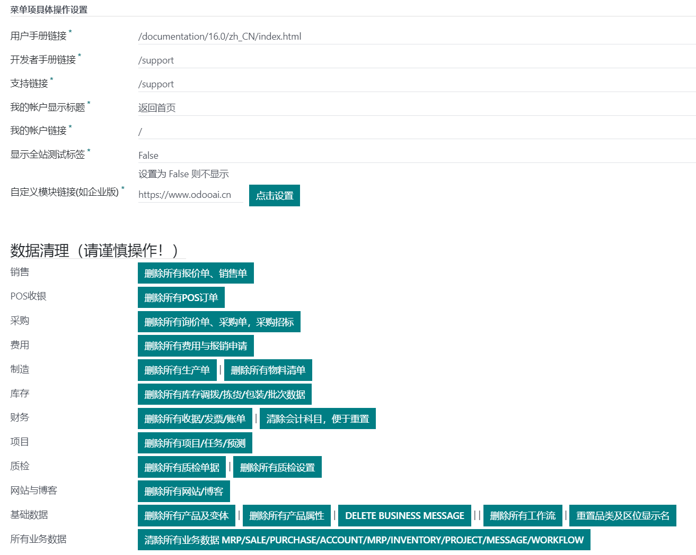
How to use: Go to Settings -> odooAi -> Customize Boost Odoo
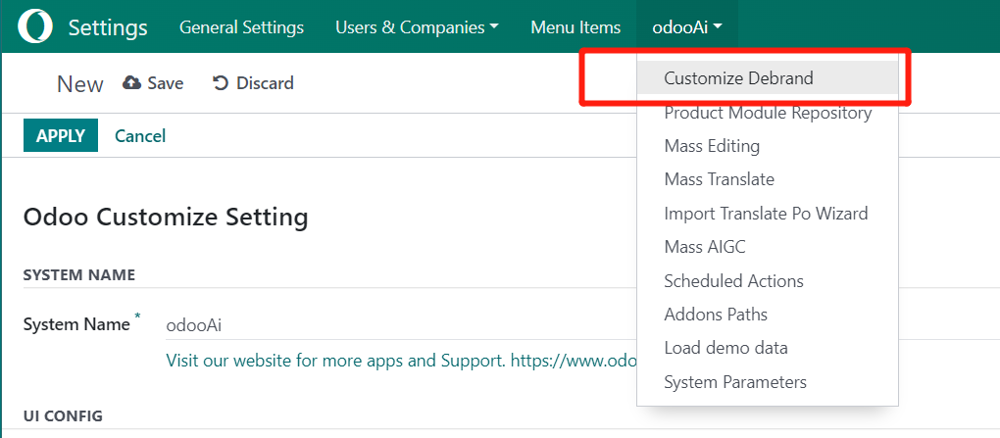
OEM White label your odoo
Replaces "Odoo" in Windows title, Deletes Odoo label in footer, Customize all odoo link to my link
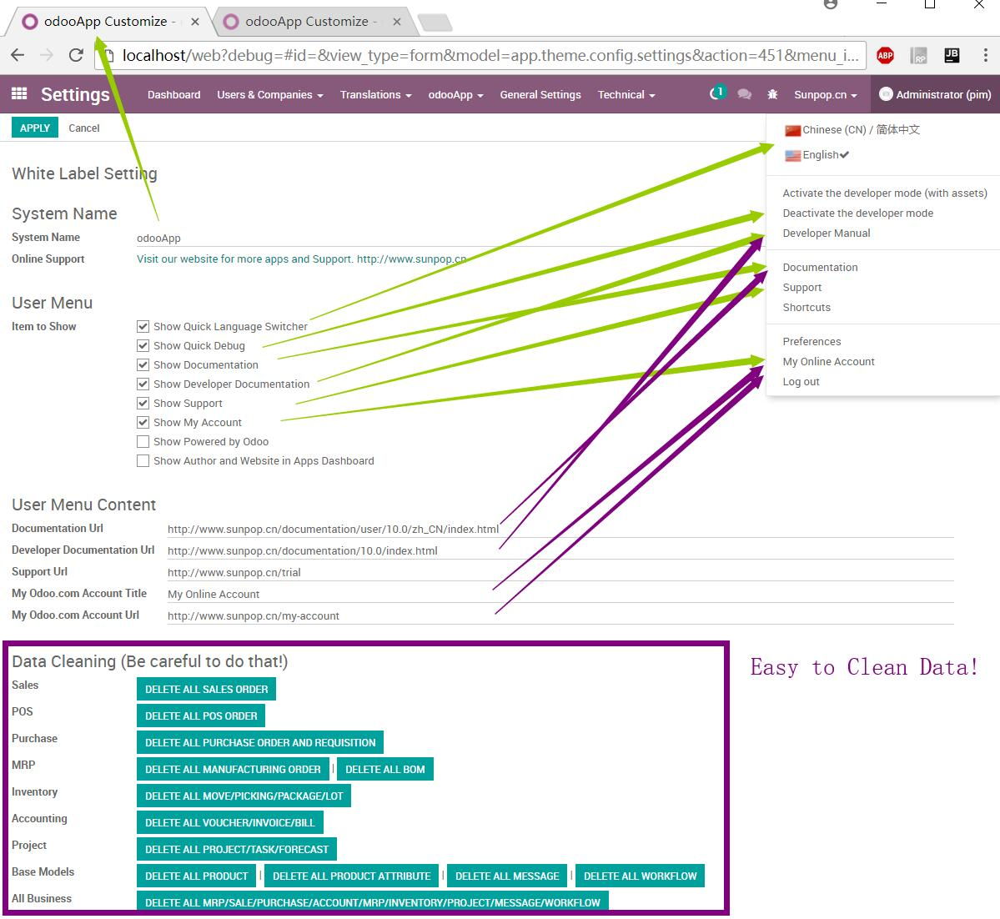
Mobile Enhance. Add menu navbar setup for top or bottom. navigator footer support.
Easy set navbar on bottom or top.
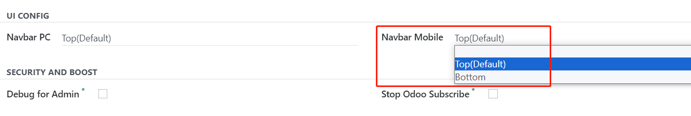
odoo SECURITY AND BOOST
Eonly Debug / Debug Assets for Odoo Admin. Deny debug from url for other user.stop subscribe and follow. This to make odoo speed up.
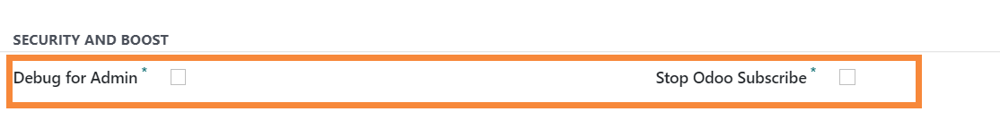
Add quick operation for odoo modules.
Refresh translate. Upgrade, Uninstall, help on topic
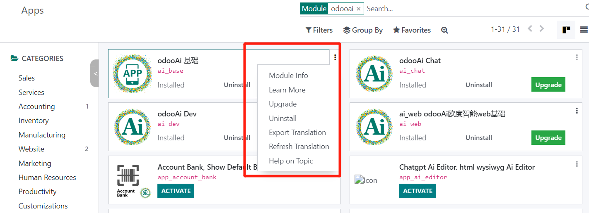
Easy mass module operation
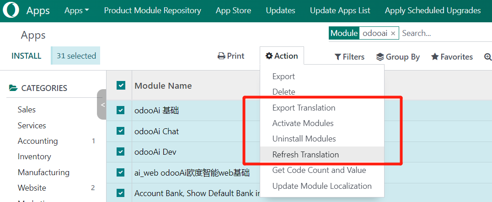
Easy Export translate follow your language
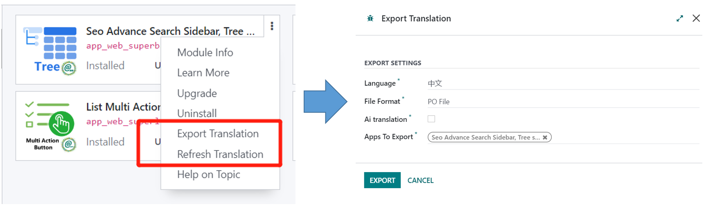
Add Draggable and sizeable Dialog enable.

Show/Hide Author and Website in Apps Dashboard
Before

After uncheck "Show Author in Apps Dashboard"

Show quick upgrade in app dashboard, click to show module info not go to odoo.com
No more redirect to odoo.com

Setup more flags: just rename the flag pic to locale code of the country
You can find the pictures in "\app-odoo\app_odoo_customize\static\src\img\flags"

Customize Extra enterprise Module Url(eg. Enterprise).
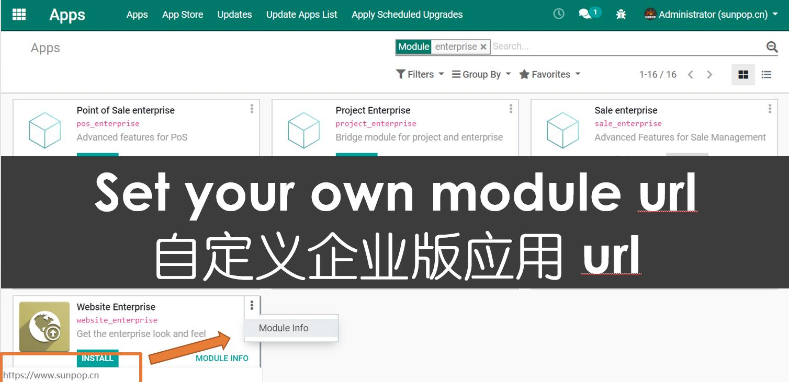
Quick Delete test Data.
You can quickly delete all the test data in Apps: Sales/POS/Purchase/MRP/Inventory/Accounting/Message/Workflow etc.
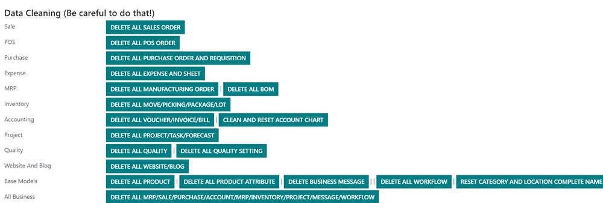